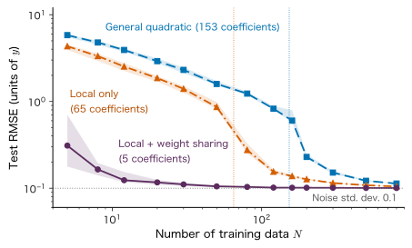
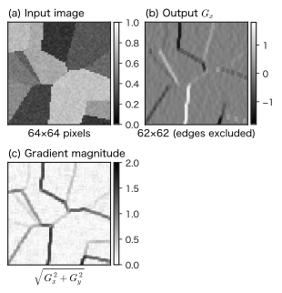
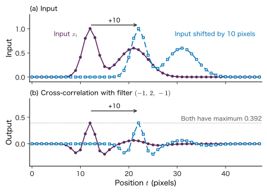
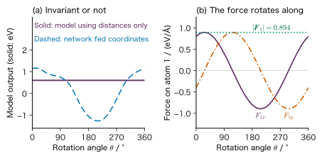

Chapter 16Deep Learning That Exploits Structure — Images, Graphs, and Symmetry
- The energy of a crystal does not change if we rotate the crystal or relabel its atoms. How can we build this fact into a model?
- A grain boundary in a microscope image is a grain boundary wherever it appears in the image. How can we express “the same wherever it is” for images without increasing the number of weights?
- Why can a model that knows the structure learn from little data? Conversely, what goes wrong if we build in too much?
Consider lining up the coordinates of the three atoms of a water molecule as nine numbers and feeding them to a fully connected network. Even for the same molecule, there are $3!=6$ ways to number the atoms, and there are infinitely many orientations. To the network, all of these are different inputs. The network has no choice but to memorize, one by one from the training data, that the energy depends on neither the orientation nor the numbering. The same holds for microscope images: for a fully connected layer, a grain boundary appearing at the upper left of a 64×64-pixel image and one appearing at the lower right are unrelated inputs.
In this chapter we learn how to build the structure of the data (pixels lie on a lattice, an atom interacts strongly only with nearby atoms, physical quantities do not change under rotation or relabeling) into the form of the model. For images we use convolution (the same small filter is reused at every position); for molecules and crystals we use a graph and message passing (information is gathered as a sum from nearby atoms). The idea common to both is invariance and equivariance with respect to symmetry. Finally, we preview that attention, which we study in Chapter 24, can be viewed as “message passing on a graph in which all vertices are connected.” This chapter is an overview for undergraduates, and specialized material is set apart in “Advanced Topic” boxes.
- You can explain, using the number of parameters and learning curves, how an inductive bias (an assumption built into the form of the model) changes the amount of data required.
- You can compute one-dimensional and two-dimensional convolutions by hand and explain weight sharing, receptive fields, pooling, and the size of the output.
- You can prove that convolution is translation equivariant, and show with numerical examples how pooling produces invariance and what its limitations are.
- You can represent a molecule or crystal as a graph (including periodic boundary conditions) and compute one step of message passing by hand.
- You can decide invariance and equivariance from the definitions, and derive with the chain rule that the energy is invariant and the force is equivariant.
- For materials tasks whose inputs are microscope images, crystal structures, or atomic configurations, you can organize the input, the output, the symmetry to be respected, and the cautions for evaluation.
Sections for the introductory route: This is a chapter of the detailed route. On the introductory route, read only Section 16.12 (Summary) and proceed to Chapter 22 (the discussion of attention in Chapter 24 is written so that it can be understood without reading this chapter).
16.1 Data Structure and Inductive BiasDetailed Route
16.1.1 A fully connected layer does not know the structure
In the fully connected layer of Chapter 14, $\bm{a}=\bm{W}\bm{x}+\bm{b}$ (with $\bm{W}\in\R^{D_1\times D}$), in the input components $x_1,\dots,x_D$, the order has no meaning. Even if we permute the input components all at once, permuting the columns of $\bm{W}$ in the same way gives exactly the same network. In other words, a fully connected layer uses no knowledge such as “$x_3$ and $x_4$ are neighboring pixels” or “swapping atom 1 and atom 2 gives the same molecule.”
Materials data have the following kinds of structure (Figure 16.1).
- Data arranged on a lattice: the pixels of a microscope image, the wavenumber or angle points of a spectrum, the time steps of a time series. Neighboring values are strongly related (locality), and the same pattern has the same meaning wherever it appears (translation).
- Set and graph data: the atoms of a molecule or crystal. The way the atoms are numbered has no meaning (permutation), and nearby atoms interact strongly with one another.
- Objects in space: the coordinates of atoms. The energy does not change when the whole object is translated or rotated (translation and rotation).
Building such structure into the form of the model as a premise is called an inductive bias. “Induction” means inferring a general rule from data, and “bias” is the tilt of the assumption placed in advance when doing so. Choosing polynomials in Chapter 8 and choosing the length scale of the kernel in Chapter 12 are also kinds of inductive bias. The inductive biases of this chapter take the forms “which weights to share,” “which inputs to connect,” and “which quantities to use alone.”
16.1.2 A numerical experiment: with the right assumption, we can learn from little data
We check the effect of an inductive bias with a small experiment in which training requires nothing more than least squares. Consider the problem of predicting the following quantity $y$ from the values $x_1,\dots,x_{16}$ at $T=16$ sites arranged in a ring (for example, the normalized deviations of the composition at each site; dimensionless) (synthetic data for teaching purposes).
\begin{equation} \begin{aligned} y=\sum_{t=1}^{16}\bigl(&0.5\,x_t^{2}-0.3\,x_tx_{t+1}\\ &+0.1\,x_tx_{t+2}\bigr)+\varepsilon \end{aligned} \label{eq:16-lattice} \end{equation}Here the indices are counted periodically ($x_{17}=x_1$, $x_{18}=x_2$), the $x_t\sim\Normal(0,1)$ are independent, and $\varepsilon\sim\Normal(0,0.1^{2})$ is observation noise. Eq. \eqref{eq:16-lattice} has the form of the energy of a one-dimensional lattice model: each term involves only the sites up to the neighbor ($t+1$) and the next neighbor ($t+2$) (locality), and the coefficients $0.5,-0.3,0.1$ are the same at every site (translation symmetry).
We fit this $y$ with three models that are linear in the coefficients (all are linear models with basis functions as in Chapter 8, and the coefficients are determined by least squares).
- Model A (general quadratic): the basis consists of a constant, the linear terms $x_t$, and all quadratic terms $x_sx_t$ ($s\le t$). The only assumption is that the function is quadratic.
- Model B (local only): the basis consists of a constant and, for each site $t$, the terms $x_t,\ x_t^{2},\ x_tx_{t+1},\ x_tx_{t+2}$. It assumes that “only nearby sites are related,” but the coefficients differ from site to site.
- Model C (local plus weight sharing): the basis consists of the five functions: a constant and $\sum_tx_t,\ \sum_tx_t^{2},\ \sum_tx_tx_{t+1},\ \sum_tx_tx_{t+2}$. It assumes both “nearby” and “the same coefficients at every site.”
All three models can represent the true function \eqref{eq:16-lattice} (A ⊃ B ⊃ C, and the true function lies in C). The only difference is the number of coefficients.
Example 16.1: The number of coefficients of the three models
For $T=16$, find the number of coefficients of models A, B, and C.
Solution. Model A: one constant and $T=16$ linear terms. The quadratic terms $x_sx_t$ ($s\le t$) number $16$ for $s=t$ and $\binom{16}{2}=120$ for $s\lt t$, that is, $136=16\cdot17/2$ in all. The total is $1+16+136=153$.
Model B: one constant and four terms per site ($x_t,x_t^{2},x_tx_{t+1},x_tx_{t+2}$), giving $1+4\times16=65$.
Model C: a constant and four sums, so $5$ coefficients. Even if $T$ is increased, it stays at 5. In contrast, A grows in proportion to $T^{2}$ and B in proportion to $T$.

The result in Figure 16.2 is clear. Model C reaches a test RMSE of $0.124$ at $N=12$, approaching the noise standard deviation $0.1$. Model B reaches the same level ($0.155$) only at $N=120$, and model A reaches a better level ($0.151$) only at $N=300$ (all are medians). The standard deviation of $y$ is about $3.1$, so when the data are few, the error of model A ($3.9$ at $N=12$) is not much different from simply answering with the mean.
Why does building in an assumption let us get by with less data?
To determine $M$ coefficients by least squares, we need at least $M$ independent equations (data) (Chapter 8, Section 8.2). Weight sharing amounts to imposing in advance equality constraints such as “the coefficient of site 1 equals the coefficient of site 2.” Each constraint imposed removes one unknown to be determined. Moreover, a single datum $(x_1,\dots,x_{16},y)$ contains examples from 16 sites, so a shared coefficient receives 16 times as much information from a single datum. However, this advantage holds only when the assumption is correct. If the true function has different coefficients at different sites, the error of model C does not decrease no matter how much data we add (Section 16.11).
16.2 Convolution — Reusing a Small FilterDetailed Route
16.2.1 One-dimensional convolution
Consider a one-dimensional signal $\bm{x}=(x_1,\dots,x_T)^{\tp}\in\R^{T}$ (a spectrum, a single row of pixels, and so on). We define the operation of applying to it a filter of width $k=2r+1$ (also called a kernel, but not to be confused with the kernel function of Chapter 10), $\bm{w}=(w_{-r},\dots,w_{r})^{\tp}\in\R^{k}$, as follows.
Definition 16.1: One-dimensional convolution layer (cross-correlation form)
The output at location $t$ is
\begin{equation} y_t=\sum_{u=-r}^{r}w_u\,x_{t+u}+b \label{eq:16-conv1d} \end{equation}Here $b\in\R$ is the bias, which is common to all locations. The values of $x$ outside the ends are handled in one of three ways: pad with 0 (zero padding), output only the locations that do not use anything outside the ends (valid), or wrap around periodically (periodic boundary).
Notation: “Convolution” and cross-correlation
The mathematical convolution is $\sum_uw_u\,x_{t-u}$ (the filter is flipped before multiplying). Deep learning libraries, by convention, call Eq. \eqref{eq:16-conv1d}, which does not flip the filter (cross-correlation), “convolution.” Since the filter is determined by learning, learning the flipped filter gives the same result, so the class of functions that can be represented does not change whichever way we write it. This chapter also calls Eq. \eqref{eq:16-conv1d} a convolution. When comparing with the convolution formula in a mathematics book, note that the direction is reversed.
Equation \eqref{eq:16-conv1d} is a special case of the fully connected layer $\bm{a}=\bm{W}\bm{x}+\bm{b}$ of Chapter 14. With a periodic boundary, $T=5$, and $k=3$, the matrix $\bm{W}\in\R^{5\times5}$ in $\bm{y}=\bm{W}\bm{x}+b\bm{1}$ is
$$ \bm{W}=\begin{pmatrix} w_0&w_1&0&0&w_{-1}\\ w_{-1}&w_0&w_1&0&0\\ 0&w_{-1}&w_0&w_1&0\\ 0&0&w_{-1}&w_0&w_1\\ w_1&0&0&w_{-1}&w_0 \end{pmatrix} $$Of the $25$ components that a fully connected layer would have, the nonzero ones lie only near the diagonal (local connectivity), and moreover the nonzero components repeat just three values (weight sharing). Each row is the row above it shifted one place to the right (cyclically); such a matrix is called a circulant matrix (Figure 16.3).
16.2.2 Two-dimensional convolution and channels
To an image $\bm{X}\in\R^{H\times W}$ ($H$ pixels tall and $W$ pixels wide; $X_{ij}$ is the brightness at row $i$ and column $j$) we apply a $k\times k$ filter $\bm{K}\in\R^{k\times k}$ ($k=2r+1$; the indices run over $-r,\dots,r$).
\begin{equation} Y_{ij}=\sum_{u=-r}^{r}\sum_{v=-r}^{r}K_{uv}\,X_{i+u,\,j+v}+b \label{eq:16-conv2d} \end{equation}When a pixel carries several values, as in a color image or in the output of a previous layer, we call each kind of value a channel. If the input has $C_{\mathrm{in}}$ channels $\bm{X}^{(1)},\dots,\bm{X}^{(C_{\mathrm{in}})}$ and the output has $C_{\mathrm{out}}$ channels, then each output channel $c'$ has $C_{\mathrm{in}}$ filters, and we sum over all the input channels.
\begin{equation} \begin{aligned} Y^{(c')}_{ij}=\sum_{c=1}^{C_{\mathrm{in}}}&\sum_{u=-r}^{r}\sum_{v=-r}^{r}K^{(c',c)}_{uv}\\ &\times X^{(c)}_{i+u,\,j+v}+b^{(c')} \end{aligned} \label{eq:16-conv-multi} \end{equation}The number of parameters $N_{\mathrm{param}}$ of a convolution layer is, per output channel, $k^{2}C_{\mathrm{in}}$ weights and one bias, so
\begin{equation} N_{\mathrm{param}}=C_{\mathrm{out}}\bigl(k^{2}C_{\mathrm{in}}+1\bigr) \label{eq:16-conv-params} \end{equation}It is important that the image size $H\times W$ does not appear. This contrasts with the number of parameters $D_l(D_{l-1}+1)$ of a fully connected layer (Chapter 14, Section 14.8), which is proportional to the input size.
After a convolution, we usually apply an elementwise activation function (such as ReLU). A network built by stacking convolution layers is called a convolutional neural network (CNN). The work of LeCun et al. (1998), who trained a CNN by backpropagation to recognize handwritten digits, is often cited as the starting point of this form.
Example 16.2: Detecting a grain boundary with a 3×3 filter
Consider a 5×5-pixel image containing a boundary between crystal grains (a grain boundary), with brightness in arbitrary units,
$$ \bm{X}=\begin{pmatrix}2&2&2&8&8\\2&2&8&8&8\\2&2&8&8&8\\2&8&8&8&8\\2&8&8&8&8\end{pmatrix} $$ $$ \bm{K}_x=\begin{pmatrix}-1&0&1\\-1&0&1\\-1&0&1\end{pmatrix} $$and apply the filter $\bm{K}_x$ without using anything outside the ends (valid). (1) State the size of the output $\bm{Y}$ and compute its upper-left component $Y_{11}$. (2) Find the whole output and describe the relation between the positions of large values and the grain boundary. (3) Also find the output obtained with $\bm{K}_y=\bm{K}_x^{\tp}$, which detects changes in the vertical direction. (4) Compare the numbers of parameters of a layer that connects a 64×64-pixel image fully to 64×64 hidden units and of a 3×3 convolution layer with $C_{\mathrm{in}}=1$ and $C_{\mathrm{out}}=16$.
Solution. (1) A 3×3 window fits in a 5×5 image in $5-3+1=3$ positions vertically and horizontally, so $\bm{Y}$ is 3×3. $Y_{11}$ is the sum of the componentwise products of the upper-left 3×3 window of $\bm{X}$, $\begin{pmatrix}2&2&2\\2&2&8\\2&2&8\end{pmatrix}$, with $\bm{K}_x$; since $\bm{K}_x$ subtracts the left column from the right column,
$$ \begin{aligned} Y_{11}&=(2-2)+(8-2)+(8-2)\\ &=0+6+6=12 . \end{aligned} $$(2) Similarly, computing “sum of the right column − sum of the left column” for every window gives
$$ \bm{K}_x\text{ output}=\begin{pmatrix}12&18&6\\18&12&0\\18&6&0\end{pmatrix} $$For example, for $Y_{12}$ (the window covers rows 1–3 and columns 2–4), subtract the sum 6 of the left column $(2,2,2)$ from the sum 24 of the right column $(8,8,8)$ to get 18. The output is 0 for the lower-right window, where the brightness is uniform, and is a large positive value for windows containing the boundary (the grain boundary) where the image brightens from left to right.
(3) $\bm{K}_y$ computes “sum of the lower row − sum of the upper row,” so the output is $\begin{pmatrix}6&6&6\\6&6&0\\6&6&0\end{pmatrix}$. Since this grain boundary runs diagonally from upper right to lower left, the change in the horizontal direction ($\bm{K}_x$) shows up more strongly.
(4) Fully connected: $4096\times4096$ weights and $4096$ biases, for $16\,781\,312$ parameters. Convolution: by Eq. \eqref{eq:16-conv-params}, $16\times(9\times1+1)=160$ parameters. This is about one hundred-thousandth as many.
Figure 16.4 shows the filters of Example 16.2 applied to a 64×64-pixel synthetic microstructure image. If we form $\sqrt{G_x^{2}+G_y^{2}}$ from the outputs $G_x,G_y$ of $\bm{K}_x$ and $\bm{K}_y$, the grain boundaries stand out regardless of their direction. In a CNN, the values of such filters are not set by a person but are learned by backpropagation.

16.2.3 Stride, padding, receptive field, and pooling
The stride $s$ is the number of pixels by which the filter is shifted each time, and the padding $P$ is the number of pixels of 0 added outside each end. When a filter of width $k$ is applied to an input of length $T$, the output length is
\begin{equation} T_{\mathrm{out}}=\left\lfloor\frac{T+2P-k}{s}\right\rfloor+1 \label{eq:16-outsize} \end{equation}($\lfloor\cdot\rfloor$ denotes rounding down). This is because, within the length $T+2P$ obtained after padding the ends with 0, the possible positions of the left end of a window of width $k$ are $0,\,s,\,2s,\dots$, and the last position must not exceed $T+2P-k$. For $k=3$, $P=1$, $s=1$ we have $T_{\mathrm{out}}=T$, so the size does not change (this is called same).
Pooling is an operation that combines the values in a small window into one; there are max pooling, which takes the maximum in the window, and average pooling, which takes the mean. Applying a 2×2 window with stride 2 halves the height and width. Pooling has no parameters. Operations that combine an entire feature map into a single value (such as global average pooling) produce an output whose length does not depend on the image size, so they are used in the final stage of classification.
The range of input pixels that influence a single output value is called its receptive field. Let $r_l$ be the width of the receptive field of layer $l$, and let $j_l$ be the number of input pixels separating two adjacent points in the output of that layer (the cumulative stride). For the input itself, $r_0=1$ and $j_0=1$, and each time we stack a layer of width $k_l$ and stride $s_l$,
\begin{equation} r_l=r_{l-1}+(k_l-1)\,j_{l-1} \label{eq:16-rf} \end{equation}holds, and the cumulative stride becomes $j_l=j_{l-1}\,s_l$. The window of layer $l$ spans $k_l$ points of layer $l-1$, and the two end points are $(k_l-1)j_{l-1}$ pixels apart in the input, so the receptive field grows by that amount. If we merely stack $n_{\mathrm{layer}}$ layers of 3×3 convolutions, the receptive field is $2n_{\mathrm{layer}}+1$ pixels, which grows only slowly. If we introduce a stride by pooling, $j$ doubles each time, and the receptive field grows quickly in the subsequent layers.
Weight sharing and backpropagation
The same weight $w_u$ is used in the output $y_t$ at every location $t$, so by Theorem 15.1 of Chapter 15 (the sum over paths), the gradient of the loss $L$ with respect to $w_u$ is the sum of the contributions from each place where it is used. Let $\delta_t\equiv\partial L/\partial y_t$. From Eq. \eqref{eq:16-conv1d}, $\partial y_t/\partial w_u=x_{t+u}$, so
\begin{equation} \pdiff{L}{w_u}=\sum_{t}\delta_t\,x_{t+u} \label{eq:16-shared-grad} \end{equation}(for the bias, $\partial L/\partial b=\sum_t\delta_t$). This sum is itself the cross-correlation of the error $\delta_t$ with the input. The statement in Section 16.1, “a shared coefficient receives information many times over from a single data point,” refers to this sum.
16.3 Translation Equivariance — Shift the Input and the Output ShiftsDetailed Route
For a signal with periodic boundary of length $T$, define the operation $S_\tau$ that shifts the whole signal by $\tau$ by
\begin{equation} (S_\tau\bm{x})_t=x_{t-\tau} \label{eq:16-shift} \end{equation}(indices are counted modulo $T$). $S_\tau\bm{x}$ is the signal obtained by moving $\bm{x}$ to the right by $\tau$ (the value of $\bm{x}$ at position $t$ moves to position $t+\tau$).
Theorem 16.1: Convolution is translation equivariant
Write the convolution layer \eqref{eq:16-conv1d} with periodic boundary as $f(\bm{x})=\bm{y}$. Then for all $\tau$ and all $\bm{x}$,
$$ f(S_\tau\bm{x})=S_\tau f(\bm{x}) $$holds. That is, shifting the input and then convolving gives the same result as convolving and then shifting.
Proof
We write out the component at position $t$ of the left-hand side according to the definition. Letting $\bm{x}'=S_\tau\bm{x}$, we have $x'_{s}=x_{s-\tau}$.
$$ \begin{aligned} \bigl(f(S_\tau\bm{x})\bigr)_t&=\sum_{u=-r}^{r}w_u\,x'_{t+u}+b\\ &=\sum_{u=-r}^{r}w_u\,x_{(t-\tau)+u}+b . \end{aligned} $$The component at position $t$ of the right-hand side is $\bm{y}=f(\bm{x})$ shifted by Eq. \eqref{eq:16-shift}, so
$$ \begin{aligned} \bigl(S_\tau f(\bm{x})\bigr)_t&=y_{t-\tau}\\ &=\sum_{u=-r}^{r}w_u\,x_{(t-\tau)+u}+b . \end{aligned} $$The two agree at every $t$. All we used is that “the weights $w_u$ and the bias $b$ do not depend on the position $t$.” For a model that uses different weights $w_u^{(t)}$ at each position (Model B of Section 16.1), the $w_u$ in the first line becomes $w_u^{(t)}$ and that in the second line becomes $w_u^{(t-\tau)}$, so the two do not agree.
∎
An elementwise activation function $h$ is also equivariant (applying $h$ to each component and then shifting gives the same result as shifting and then applying it). Since a composition of equivariant maps is also equivariant ($f_2(f_1(S_\tau\bm{x}))=f_2(S_\tau f_1(\bm{x}))=S_\tau f_2(f_1(\bm{x}))$), the network as a whole is translation equivariant no matter how many convolution layers and activation functions are stacked.
On the other hand, when we want to answer only “what is shown” and not “where it is shown,” as in classification, we want the output not to depend on how the input is shifted, that is, translation invariance $g(S_\tau\bm{x})=g(\bm{x})$. Taking the overall maximum or the overall sum (mean) at the end of the equivariant features makes the output invariant. This is because the overall sum $\sum_ty_t$ does not change its value when the order of the entries is changed.

Example 16.3: What changes and what does not change under a shift
Apply the filter $(w_{-1},w_0,w_1)=(-1,2,-1)$, $b=0$ to the periodic signal $\bm{x}=(0,0,1,3,1,0,0,0)$ of length $T=8$. (1) Find the output $\bm{y}$. (2) Find the output for $S_2\bm{x}$, which is $\bm{x}$ shifted to the right by 2, and compare it with $S_2\bm{y}$. (3) Does the overall maximum change? (4) Apply max pooling with width 2 and stride 2 to $\bm{y}$, and compare the results for shifts of 0, 1, and 2.
Solution. (1) We have $y_t=-x_{t-1}+2x_t-x_{t+1}$, and because of the periodic boundary we set $x_0=x_8=0$ and $x_9=x_1=0$.
$$ \begin{aligned} y_1&=-x_8+2x_1-x_2=0,\\ y_2&=-x_1+2x_2-x_3=-1,\\ y_3&=-x_2+2x_3-x_4=-1,\\ y_4&=-x_3+2x_4-x_5=4,\\ y_5&=-x_4+2x_5-x_6=-1,\\ y_6&=-x_5+2x_6-x_7=-1,\\ y_7&=y_8=0 . \end{aligned} $$Hence $\bm{y}=(0,-1,-1,4,-1,-1,0,0)$.
(2) $S_2\bm{x}=(0,0,0,0,1,3,1,0)$. The same computation gives the output $(0,0,0,-1,-1,4,-1,-1)$, which agrees with $S_2\bm{y}$ ($\bm{y}$ shifted to the right by 2) (Theorem 16.1).
(3) The maximum is 4 in both cases, so it does not change (the overall maximum is invariant).
(4) Taking the maximum of each pair $(y_1,y_2),(y_3,y_4),\dots$ of two entries of $\bm{y}$ gives $(0,4,-1,0)$. For the output $S_1\bm{y}=(0,0,-1,-1,4,-1,-1,0)$ of the input shifted by 1, it gives $(0,-1,4,0)$, and for a shift of 2 it gives $(0,0,4,-1)$. When the shift is 2, the pooling output is also shifted by one entry (it is equivariant for shifts that are multiples of the stride), but when the shift is 1, the result cannot be expressed as a mere shift. Pooling with a stride destroys exact equivariance for shifts finer than the stride.
Caution: “Translation equivariance” breaks down at the edges and with strides
Theorem 16.1 assumed a periodic boundary. For zero padding or a valid convolution, it does not hold near the edges of the image (when the input is shifted, the part that goes outside the image and the part filled with 0 are exchanged). Also, as in Example 16.3 (4), a layer with stride 2 or more is not equivariant for shifts that are not multiples of the stride. The “same answer even when shifted” of an actual CNN is only approximate, and to compensate for that approximation it is common to add shifted images to the training data (data augmentation).
16.4 CNNs and Microstructure — Classifying and Segmenting Microscope ImagesDetailed Route
16.4.1 Types of tasks
The microstructure of a material (crystal grains, precipitates, pores, the distribution of phases) is recorded as images from an optical microscope or a scanning electron microscope (SEM). Since the microstructure governs strength, toughness, and electrical properties, quantifying the microstructure from images is a basic task in materials research. Tasks that use CNNs fall broadly into two types according to the form of the output.
- Classification: attach one label (such as “ferrite + pearlite” or “martensite”) to each image. The input is $\bm{X}\in\R^{H\times W}$ (one channel for a grayscale image), and the output is the probability $\hat{\bm{y}}\in\R^{K}$ of $K$ classes (the softmax of Chapter 14, Section 14.6). Features are built while the image is shrunk by convolution and pooling, and at the end the overall mean is taken (translation invariance) and the image is classified by a fully connected layer.
- Segmentation: attach a label (inside a grain, grain boundary, pore, and so on) to each pixel. The output is $H\times W\times K$, the same size as the input, and this is a task that should be translation equivariant. An encoder–decoder architecture (U-Net, Ronneberger et al. 2015) is often used, which first shrinks the image to capture context over a wide range and then restores it to the original size. From the result of the segmentation, one counts the grain size distribution, the phase fractions, and the porosity.
In both cases, the labels used for learning (which pixels are grain boundaries) are attached by people, and the variability in the criteria of the people who attach the labels becomes, as it is, the variability of the “correct answer.”
16.4.2 Magnification and imaging conditions — distribution shift
The filters of a CNN learn patterns in units of pixels. Even for the same microstructure, if the magnification differs by a factor of 4, the grains appear with 4 times the number of pixels and no longer match the size of the learned filters. If the accelerating voltage, the detector (secondary electrons or backscattered electrons), the etching conditions, or the brightness and contrast differ, the same microstructure becomes a different image. These are situations in which the distributions of the training data and the test data differ (distribution shift; Chapter 6, Section 6.9), and translation equivariance does not help at all (translation deals only with “the same magnification but a different position”). Countermeasures include aligning the pixel size (μm/pixel) before learning and predicting, adding images with changed magnification or brightness to the training data (data augmentation), and recording the imaging conditions and separating the evaluation by condition.
Example 16.4: How many μm is the receptive field?
Consider a network in which “convolution → convolution → 2×2 max pooling (stride 2)” with 3×3 convolutions (stride 1) is repeated twice, and then two more 3×3 convolution layers are stacked at the end (6 convolution layers and 2 pooling layers). (1) Find the width of the receptive field of the last layer using Eq. \eqref{eq:16-rf}. (2) For images with pixel sizes of 0.25 μm and 1.0 μm, how many μm is the receptive field? (3) When observing a microstructure with a mean grain size of 10 μm, compare the range that one output “sees” at the two magnifications.
Solution. (1) We compute in order, starting from $r_0=1$, $j_0=1$.
| Layer | $k_l$ | $s_l$ | $r_l=r_{l-1}+(k_l-1)j_{l-1}$ | $j_l$ |
|---|---|---|---|---|
| Convolution 1 | 3 | 1 | $1+2\times1=3$ | 1 |
| Convolution 2 | 3 | 1 | $3+2\times1=5$ | 1 |
| Pooling 1 | 2 | 2 | $5+1\times1=6$ | 2 |
| Convolution 3 | 3 | 1 | $6+2\times2=10$ | 2 |
| Convolution 4 | 3 | 1 | $10+2\times2=14$ | 2 |
| Pooling 2 | 2 | 2 | $14+1\times2=16$ | 4 |
| Convolution 5 | 3 | 1 | $16+2\times4=24$ | 4 |
| Convolution 6 | 3 | 1 | $24+2\times4=32$ | 4 |
The receptive field is 32 pixels. (2) $32\times0.25=8$ μm and $32\times1.0=32$ μm. (3) A grain size of 10 μm is 40 pixels at 0.25 μm/pixel and 10 pixels at 1.0 μm/pixel. In the former, the receptive field (8 μm) is narrower than a single grain, and the output sees only “the inside of a grain or a part of a grain boundary.” In the latter, about three grains line up within the receptive field (32 μm). Even for a network with the same weights, when the magnification changes, the physical range being seen changes by a factor of 4, and the meaning of the learned features changes.
16.4.3 Do not split fields of view of the same sample between training and test
It is common to take dozens of fields of view from one sample. Fields of view of the same sample share composition, heat treatment, polishing, and imaging conditions, so they closely resemble one another. If the images are randomly split into training and test one by one, then for most of the test images a “sibling image from the same sample” is in the training data. This is data leakage (Chapter 6, Section 6.7), and the test score measures only the ability to predict “another field of view of the same sample,” not the ability to predict “a new sample.” The split is made in units of samples (or heat-treatment batches) (Figure 16.6, Chapter 6, Section 6.8).
Let us count how many siblings end up in training. Suppose 20 fields of view are taken from each of five samples, 100 images in total, and 80 are randomly assigned to training and 20 to test. Fix one test image. Each of the other 19 images of the same sample falls in one of the 80 training slots among the remaining 99 slots with probability $80/99$, so the expectation (expected value) of the number of siblings in training is $19\times80/99\approx15.4$ images. No sibling at all ends up in training only when all 19 fall in the remaining 19 test slots, and the probability of this is $1/\binom{99}{19}\approx9\times10^{-21}$.
16.5 Molecules and Crystals as GraphsDetailed Route
16.5.1 Vertices and edges
A collection of atoms is not arranged on a lattice the way pixels are. So we represent it as a graph. A graph $G=(\mathcal{V},\mathcal{E})$ consists of a set of vertices $\mathcal{V}=\{1,\dots,N_{\mathrm{at}}\}$ and a set of edges $\mathcal{E}$ that connect pairs of vertices. For a system of atoms we fix them as follows (Figure 16.7).
- Vertex = atom. Each vertex $i$ carries a feature vector $\bm{h}_i\in\R^{d}$ (a one-hot vector for the chemical element, or a list of values such as the electronegativity and the atomic radius).
- Edge = a pair of nearby atoms. Let the positions of atoms $i,j$ be $\bm{r}_i,\bm{r}_j\in\R^{3}$ (in Å), and draw an edge if the distance $r_{ij}=\norm{\bm{r}_i-\bm{r}_j}$ is smaller than the cutoff radius $r_{\mathrm c}$. Each edge carries a feature $\bm{e}_{ij}$ (the distance $r_{ij}$ itself, or a vector obtained by expanding it in the radial basis of Section 16.8).
- Neighborhood: we write $\mathcal{A}(i)$ for the set of vertices joined to vertex $i$ by an edge (the initial of “adjacent.” The graph literature often writes $\Normal(i)$, but in this book we distinguish it from the symbol $\Normal$ of the Gaussian distribution).
Since the numbering of the atoms is arbitrary, we build computations on graphs in a form that does not depend on the numbering (Section 16.6).
16.5.2 Periodic boundary conditions — the graph of a crystal
A crystal is a repetition of the unit cell. Let $\bm{A}=(\bm{a}_1\ \bm{a}_2\ \bm{a}_3)\in\R^{3\times3}$ be the matrix whose columns are the lattice vectors $\bm{a}_1,\bm{a}_2,\bm{a}_3\in\R^{3}$. Then a periodic image of atom $j$ in the unit cell lies at the position $\bm{r}_j+\bm{A}\bm{n}$ (where $\bm{n}\in\mathbb{Z}^{3}$ is a triple of integers). The distance from atom $i$ to the periodic image $\bm{n}$ of atom $j$ is
\begin{equation} r_{ij}^{(\bm{n})}=\norm{\bm{r}_j+\bm{A}\bm{n}-\bm{r}_i} \label{eq:16-pbc} \end{equation}and we draw an edge for every triple $(i,j,\bm{n})$ for which it is smaller than $r_{\mathrm c}$. The vertices are only the atoms in the unit cell ($N_{\mathrm{at}}$ of them), so many edges, one for each periodic image, can be drawn between the same pair $i,j$. If the unit cell contains only one atom, every edge goes to a periodic image of the atom itself (a self-loop). A graph in which several edges can join the same pair of vertices in this way is called a multigraph. If we represent a crystal by an ordinary graph with “one edge per pair of atoms in the unit cell,” this information is lost.
Example 16.5: Building the graph of a two-dimensional crystal
Consider a two-dimensional crystal with a square unit cell of side 4 Å ($\bm{a}_1=(4,0)$, $\bm{a}_2=(0,4)$ Å), with an atom A at $(0,0)$ and an atom B at $(2,2)$ Å. (1) With cutoff radius $r_{\mathrm c}=3.0$ Å, list all edges leaving A (the partner atom and the periodic image $\bm{n}$). (2) How many edges leave A if $r_{\mathrm c}=4.5$ Å? (3) Find the total number of edges, counting each direction separately, for the two values of $r_{\mathrm c}$.
Solution. (1) The distance from A to the periodic image $(2+4n_1,\ 2+4n_2)$ of B is $\sqrt{(2+4n_1)^{2}+(2+4n_2)^{2}}$. When $n_1,n_2\in\{0,-1\}$, each component is $\pm2$, and the distance is $\sqrt{4+4}=2\sqrt{2}\approx2.83$ Å $\lt3.0$ Å. Otherwise at least one component has absolute value 6 or more, and the distance is at least $\sqrt{36+4}\approx6.32$ Å. The distance from A to a periodic image of A is $4\sqrt{n_1^{2}+n_2^{2}}$, which is at least 4 Å. Therefore the edges are the 4 edges A→B, and the periodic images are $\bm{n}=(0,0),(-1,0),(0,-1),(-1,-1)$.
(2) With $r_{\mathrm c}=4.5$ Å, 4 self-loops are added from A to its own periodic images $\bm{n}=(\pm1,0),(0,\pm1)$ (distance 4 Å), giving 8 edges in all.
(3) The picture seen from B has the same form (4 edges from B to A, and, for $r_{\mathrm c}=4.5$ Å, also 4 self-loops of B), so the total is 8 edges for $r_{\mathrm c}=3.0$ Å and 16 edges for $4.5$ Å. There are only two vertices, yet there are 8 and 16 edges, and there are 4 edges each between the same pair (A and B).
16.6 Message Passing — Summing Over Nearby AtomsDetailed Route
16.6.1 The equations for one step
Many networks on graphs repeat the following operation several times. Let $\bm{h}_i^{(l)}\in\R^{d_l}$ be the feature of vertex $i$ at the $l$th step ($\bm{h}_i^{(0)}$ is the vertex feature of Section 16.5).
Definition 16.2: Message passing
For each vertex $i$, create a message from each vertex $j$ in the neighborhood $\mathcal{A}(i)$, add the messages up, and use the result to update the feature.
\begin{equation} \begin{aligned} \bm{m}_i^{(l)}&=\sum_{j\in\mathcal{A}(i)}M_l\bigl(\bm{h}_i^{(l)},\\ &\qquad\quad\bm{h}_j^{(l)},\,\bm{e}_{ij}\bigr) \end{aligned} \label{eq:16-mp-msg} \end{equation} \begin{equation} \bm{h}_i^{(l+1)}=U_l\bigl(\bm{h}_i^{(l)},\,\bm{m}_i^{(l)}\bigr) \label{eq:16-mp-upd} \end{equation}$M_l$ (the message function) and $U_l$ (the update function) are small fully connected networks with weights that are shared by all vertices and all edges. After repeating this operation for $n_{\mathrm{layer}}$ steps (one step corresponds to one layer, so we use the same symbol as for the number of layers), we combine the features of all vertices into the output for the whole graph (the readout).
\begin{equation} \hat{y}=R\Bigl(\sum_{i=1}^{N_{\mathrm{at}}}g\bigl(\bm{h}_i^{(n_{\mathrm{layer}})}\bigr)\Bigr) \label{eq:16-readout} \end{equation}Alternatively, take the mean $\frac{1}{N_{\mathrm{at}}}\sum_{i}g\bigl(\bm{h}_i^{(n_{\mathrm{layer}})}\bigr)$ instead of the sum. $g$ and $R$ are also small networks (or the identity map).
This framework is what Gilmer et al. (2017) named the message passing neural network, bringing together several earlier networks for molecules. The $\bm{h}_i^{(l)}$ of this book corresponds to the hidden-layer output $\bm{z}^{(l)}$ of Chapter 14, but there is one for each vertex, so we attach the vertex index $i$. We use $\bm{h}$ because this letter is standard in the graph literature (it is a different quantity from the $\bm{h}_t$ of the RNN in Chapter 23).
The key points of this form are the following three.
- Locality: in one step, information travels only along one edge. After $n_{\mathrm{layer}}$ steps, $\bm{h}_i^{(n_{\mathrm{layer}})}$ depends only on the atoms within reach by following $n_{\mathrm{layer}}$ edges (at most a distance $n_{\mathrm{layer}}r_{\mathrm c}$). This corresponds to the receptive field of a convolution.
- Weight sharing: $M_l,U_l$ are the same for all atoms, so the same network can be used for molecules and crystals with different numbers of atoms. This is just like a convolution not depending on the size of the image.
- Gathering by a sum: the sum in Eq. \eqref{eq:16-mp-msg} gives the same value whatever order the neighboring vertices are added in. So even if we renumber the atoms, the new feature of each atom keeps the same value, and only the labels are permuted (permutation equivariance). The sum and the mean in the readout \eqref{eq:16-readout} also do not depend on the order, so $\hat{y}$ is permutation invariant.
Example 16.6: Following message passing on 3 atoms by hand
In a plane, atom 1 (element A) is at $(0,0)$, atom 2 (element B) at $(1.0,0)$, and atom 3 (element B) at $(0,1.5)$ Å (a model for teaching purposes). Let the cutoff radius be 2.0 Å, and let the vertex features be one-dimensional with $h^{(0)}=1.0$ (A) and $0.5$ (B). Let the message and the update be
$$ \begin{aligned} M(h_i,h_j,r_{ij})&=h_j\,\phi(r_{ij}),\\ \phi(r)&=\exp\!\left(-\frac{r^{2}}{2\ \text{Å}^{2}}\right),\\ U(h,m)&=\tanh(h+m) \end{aligned} $$and let the readout be $E=v\sum_ih_i^{(1)}$ ($v=-2.0$ eV). (1) Find the three distances and the values of $\phi$. (2) Find $m_i^{(0)}$ and $h_i^{(1)}$. (3) Find $E$. How many eV/atom is it if we read out with the mean? (4) Renumber the atoms, calling the original atoms 3, 1, 2 the new atoms 1, 2, 3. What happens to (2) and (3)?
Solution. (1) $r_{12}=1.0$ Å, $r_{13}=1.5$ Å, $r_{23}=\sqrt{1.0^{2}+1.5^{2}}=\sqrt{3.25}=1.803$ Å. All are smaller than 2.0 Å, so all three pairs become edges. $\phi(1.0)=e^{-0.5}=0.6065$, $\phi(1.5)=e^{-1.125}=0.3247$, $\phi(1.803)=e^{-1.625}=0.1969$.
(2) Messages reach atom 1 from atoms 2 and 3 (both with $h=0.5$).
The update gives
$$ \begin{aligned} h_1^{(1)}&=\tanh(1.0+0.4656)=0.8987,\\ h_2^{(1)}&=\tanh(0.5+0.7050)=0.8352,\\ h_3^{(1)}&=\tanh(0.5+0.4231)=0.7274 . \end{aligned} $$Atoms 2 and 3, which are the same element B, ended up with different features because their surroundings differ.
(3) Taking the sum,
With the mean, it is $-2.0\times2.4613/3=-1.641$ eV/atom.
(4) With the new numbering, the features are listed as $(0.5,1.0,0.5)$, and the table of distances has its rows and columns permuted in the same way, so the message and the new feature of each atom are a permutation $(0.7274,0.8987,0.8352)$ of the original values (permutation equivariance). The sum is the same, $2.4613$, so $E=-4.923$ eV remains (permutation invariance).
16.6.2 Differences among the sum, the mean, and the maximum
For the gathering (Eq. \eqref{eq:16-mp-msg}) and the readout (Eq. \eqref{eq:16-readout}) we may use any operation that does not depend on the order. The typical choices are the sum, the mean, and the maximum, and we choose according to what we want to represent.
- The sum grows in proportion to the number of atoms, so it suits the readout of an extensive quantity (the total energy). The statement “express the total energy as a sum of per-atom energies” in Chapter 14, Section 14.9 is exactly a sum readout with $g$ taken to be the per-atom energy.
- The mean does not depend on the number of atoms, so it suits an intensive quantity (the formation energy per atom, the band gap). It returns the same value even when we put in a 2×2×2 supercell of the unit cell (Example 16.10).
- The maximum is suited to properties of the kind “if there is even one place” (such as the presence of a defect), but the gradient flows only to the vertex with the largest value.
Advanced Topic: The general form of a permutation-invariant function
It is known that if a function $f(\{\bm{x}_1,\dots,\bm{x}_N\})$ that takes a set as its input is permutation invariant, then it can be written as $f=\rho\bigl(\sum_i\phi(\bm{x}_i)\bigr)$ with suitable functions $\phi,\rho$ (Deep Sets of Zaheer et al. 2017, under conditions such as the elements being taken from a countable set). The readout \eqref{eq:16-readout} has exactly this form. In other words, the form “transform each element by the same function, add, and then transform” is not a special device for constructing permutation-invariant functions but is almost the general form.
16.7 Symmetry — Invariance and EquivarianceDetailed Route
16.7.1 Definition
We write the positions of $N_{\mathrm{at}}$ atoms collectively as $\bm{\mathcal{R}}=(\bm{r}_1,\dots,\bm{r}_{N_{\mathrm{at}}})$. The operations that can be applied to a system of atoms and carry it to a “physically identical system” are of the following three kinds.
- Translation: $\bm{r}_i\mapsto\bm{r}_i+\bm{t}$ ($\bm{t}\in\R^{3}$, the same for all atoms).
- Rotation: $\bm{r}_i\mapsto\bm{Q}\bm{r}_i$. Here $\bm{Q}\in\R^{3\times3}$ is a rotation matrix ($\bm{Q}^{\tp}\bm{Q}=\bm{I}$, $\det\bm{Q}=1$; University Mathematics, Chapter 16, Section 16.4).
- Permutation: relabel the atoms of the same element by $\pi$: $\bm{r}_i\mapsto\bm{r}_{\pi(i)}$.
We write these operations collectively as $g$, and write the result of acting on $\bm{\mathcal{R}}$ with it as $g\cdot\bm{\mathcal{R}}$.
Definition 16.3: Invariance and equivariance
A function $f$ is invariant under an operation $g$ if
\begin{equation} f(g\cdot\bm{\mathcal{R}})=f(\bm{\mathcal{R}}) \label{eq:16-inv} \end{equation}holds for all $\bm{\mathcal{R}}$. Suppose that the output also has a definite “output-side representation” $g\cdot$ of the same operation. If
\begin{equation} f(g\cdot\bm{\mathcal{R}})=g\cdot f(\bm{\mathcal{R}}) \label{eq:16-equiv} \end{equation}holds for all $\bm{\mathcal{R}}$, then $f$ is said to be equivariant under $g$.
Invariance is the special case of equivariance in which the output-side $g\cdot$ “does nothing.” The translation equivariance of convolution (Theorem 16.1) is the case in which the shift $S_\tau$ acts on both the input and the output.
16.7.2 The energy is invariant, the force is equivariant
The energy $E(\bm{\mathcal{R}})$ of an isolated molecule is invariant under translation, rotation, and permutation of atoms of the same element. The force $\bm{F}_i=-\partial E/\partial\bm{r}_i\in\R^{3}$ (in units of eV/Å) acting on atom $i$ rotates along with the system when the system is rotated. That the force is equivariant can be derived from the invariance of the energy.
Theorem 16.2: An invariant energy yields an equivariant force
Write $\bm{Q}\bm{\mathcal{R}}+\bm{t}$ for the configuration obtained by applying the same rotation $\bm{Q}$ and translation $\bm{t}$ to all atoms. If $E$ is invariant under rotation and translation, that is, if $E(\bm{Q}\bm{\mathcal{R}}+\bm{t})=E(\bm{\mathcal{R}})$ for all $\bm{Q}$ and $\bm{t}$, then
$$ \begin{aligned} &\bm{F}_i(\bm{Q}\bm{\mathcal{R}}+\bm{t})=\bm{Q}\,\bm{F}_i(\bm{\mathcal{R}}),\\ &\sum_{i=1}^{N_{\mathrm{at}}}\bm{F}_i(\bm{\mathcal{R}})=\bm{0} \end{aligned} $$hold.
Proof
Let $\bm{r}'_k=\bm{Q}\bm{r}_k+\bm{t}$ be the positions after the transformation, and differentiate both sides of the invariance relation $E(\bm{r}'_1,\dots)=E(\bm{r}_1,\dots)$ partially with respect to the $a$th component $r_{i,a}$ ($a=1,2,3$) of the position of atom $i$. The right-hand side is $\partial E/\partial r_{i,a}=-F_{i,a}(\bm{\mathcal{R}})$. For the left-hand side we use the chain rule (University Mathematics, Chapter 6, Section 6.4): the only quantity that depends on $r_{i,a}$ is the component $r'_{i,b}=\sum_{c}Q_{bc}r_{i,c}+t_b$ of $\bm{r}'_i$, and $\partial r'_{i,b}/\partial r_{i,a}=Q_{ba}$, so
$$ \begin{aligned} \pdiff{}{r_{i,a}}E(\bm{r}'_1,\dots)&=\sum_{b=1}^{3}\pdiff{E}{r'_{i,b}}\bigg|_{\bm{\mathcal{R}}'}\pdiff{r'_{i,b}}{r_{i,a}}\\ &=-\sum_{b=1}^{3}F_{i,b}(\bm{\mathcal{R}}')\,Q_{ba} . \end{aligned} $$Equating the two sides gives $\sum_bQ_{ba}F_{i,b}(\bm{\mathcal{R}}')=F_{i,a}(\bm{\mathcal{R}})$, or, in vector form, $\bm{Q}^{\tp}\bm{F}_i(\bm{\mathcal{R}}')=\bm{F}_i(\bm{\mathcal{R}})$. Multiplying by $\bm{Q}$ from the left and using $\bm{Q}\bm{Q}^{\tp}=\bm{I}$, we obtain $\bm{F}_i(\bm{\mathcal{R}}')=\bm{Q}\bm{F}_i(\bm{\mathcal{R}})$.
Next, take $\bm{Q}=\bm{I}$ (translation only) and let $\bm{t}=\epsilon\bm{e}_a$ ($\bm{e}_a$ is the unit vector along the $a$th axis). Since $E(\bm{r}_1+\epsilon\bm{e}_a,\dots)=E(\bm{r}_1,\dots)$ holds for all $\epsilon$, we differentiate with respect to $\epsilon$ and set $\epsilon=0$. Because the positions of all atoms move simultaneously, the chain rule gives $\sum_i\partial E/\partial r_{i,a}=0$, that is, $\sum_iF_{i,a}=0$.
∎
This theorem has great practical significance. If we express the energy with an invariant model and obtain the forces as its derivatives, then the forces are automatically equivariant and their sum is automatically 0 (momentum is conserved). As described in Chapter 15, Section 15.10, this derivative is obtained by the same mechanism as backpropagation (reverse-mode automatic differentiation).
16.7.3 Using only distances makes the model invariant
The distance $r_{ij}=\norm{\bm{r}_i-\bm{r}_j}$ between two atoms is invariant under translation and rotation:
$$ \begin{aligned} &\norm{(\bm{Q}\bm{r}_i+\bm{t})-(\bm{Q}\bm{r}_j+\bm{t})}\\ &\quad=\norm{\bm{Q}(\bm{r}_i-\bm{r}_j)}\\ &\quad=\sqrt{(\bm{r}_i-\bm{r}_j)^{\tp}\bm{Q}^{\tp}\bm{Q}(\bm{r}_i-\bm{r}_j)}\\ &\quad=r_{ij} . \end{aligned} $$Therefore, if the message passing of Section 16.6 uses only the distance (and functions of it) for the edge features $\bm{e}_{ij}$ and only the element information for the vertex features, then every $\bm{h}_i^{(l)}$ is invariant under translation and rotation, and with a sum readout the model is also invariant under permutation. The simplest example is the sum of pairwise potentials $V(r)$ between atoms,
\begin{equation} E=\sum_{i\lt j}V(r_{ij}) \label{eq:16-pair} \end{equation}for which the force acting on atom $i$ is
\begin{equation} \bm{F}_i=\sum_{j\ne i}V'(r_{ij})\,\frac{\bm{r}_j-\bm{r}_i}{r_{ij}} \label{eq:16-pairforce} \end{equation}This equation follows from $\partial r_{ij}/\partial\bm{r}_i=(\bm{r}_i-\bm{r}_j)/r_{ij}$ and $\bm{F}_i=-\partial E/\partial\bm{r}_i$. If $V'(r_{ij})\gt0$ (the spring is stretched), atom $i$ is pulled toward $j$.

Example 16.7: The energy stays the same when rotated, and the forces rotate along
Three atoms in a plane are at $\bm{r}_1=(0,0)$, $\bm{r}_2=(1.2,0)$, $\bm{r}_3=(0,0.9)$ Å, and every pair is joined by the same harmonic spring $V(r)=\tfrac{k}{2}(r-r_0)^{2}$ ($k=4$ eV/Å$^{2}$, $r_0=1.0$ Å) (a model for teaching purposes). (1) Find the energy $E$ and the three forces using Eq. \eqref{eq:16-pairforce}, and verify that the sum of the forces is 0. (2) What happens to $E$ and the forces when the whole system is rotated by 90° ($\bm{Q}=\begin{pmatrix}0&-1\\1&0\end{pmatrix}$)? (3) Is the model whose output is “the sum of the $x$ coordinates of the atoms” rotation invariant?
Solution. (1) The distances are $r_{12}=1.2$, $r_{13}=0.9$, $r_{23}=\sqrt{1.44+0.81}=1.5$ Å.
$$ \begin{aligned} E&=\tfrac{4}{2}\bigl[(1.2-1.0)^{2}+(0.9-1.0)^{2}\\ &\qquad+(1.5-1.0)^{2}\bigr]\\ &=2\times(0.04+0.01+0.25)\\ &=0.60\ \text{eV}. \end{aligned} $$Since $V'(r)=k(r-r_0)$, we have $V'(r_{12})=0.8$, $V'(r_{13})=-0.4$, $V'(r_{23})=2.0$ eV/Å. The unit vectors are $(\bm{r}_2-\bm{r}_1)/r_{12}=(1,0)$, $(\bm{r}_3-\bm{r}_1)/r_{13}=(0,1)$, $(\bm{r}_3-\bm{r}_2)/r_{23}=(-0.8,0.6)$.
$$ \begin{aligned} \bm{F}_1&=0.8(1,0)-0.4(0,1)\\ &=(0.8,\,-0.4),\\ \bm{F}_2&=0.8(-1,0)+2.0(-0.8,0.6)\\ &=(-2.4,\,1.2),\\ \bm{F}_3&=-0.4(0,-1)+2.0(0.8,-0.6)\\ &=(1.6,\,-0.8) \end{aligned} $$(in eV/Å). The $x$ component of the sum is $0.8-2.4+1.6=0$, and the $y$ component is $-0.4+1.2-0.8=0$.
(2) After the rotation the positions are $(0,0)$, $(0,1.2)$, $(-0.9,0)$, and the three distances do not change, so $E=0.60$ eV as before. Computing the forces in the same way gives $\bm{F}_1=(0.4,0.8)$, $\bm{F}_2=(-1.2,-2.4)$, $\bm{F}_3=(0.8,1.6)$, which agree with $\bm{Q}\bm{F}_i$ (where $\bm{Q}(a,b)^{\tp}=(-b,a)^{\tp}$) (Theorem 16.2).
(3) Before the rotation the value is $0+1.2+0=1.2$ Å, and after the rotation it is $0+0-0.9=-0.9$ Å. The value changes, so the model is not invariant.
Notation: How scalars, vectors, and tensors change
Under a rotation $\bm{Q}$, a scalar such as the energy or the band gap does not change (it is invariant). A vector $\bm{v}$ such as the force or the electric dipole moment changes to $\bm{Q}\bm{v}$, and a second-rank tensor $\bm{T}\in\R^{3\times3}$ such as the stress or the dielectric constant changes to $\bm{Q}\bm{T}\bm{Q}^{\tp}$. Which quantity we want to predict determines the property the model should be required to have (invariant, or equivariant of which form).
16.8 An Overview of Models for Crystals and MoleculesDetailed Route
We look at two representative models that combine the ideas of Sections 16.5–16.7. Both are a kind of message passing, and because they use only the distance as the edge feature, they are invariant under translation, rotation, and permutation. The equations recast the ideas of the original papers in the notation of this book, and details (the number of layers, where normalization is inserted, and so on) are omitted.
16.8.1 Expanding the distance in a basis
The distance $r_{ij}$ is a single number, so as it stands a small network has difficulty telling fine differences in distance apart. We therefore line up Gaussian functions with shifted centers $\mu_k$ and expand the distance into a $K$-dimensional vector (a radial basis expansion).
\begin{equation} e_k(r_{ij})=\exp\!\bigl[-\gamma\,(r_{ij}-\mu_k)^{2}\bigr] \label{eq:16-rbf} \end{equation}($k=1,\dots,K$). Here $\gamma$ (in units of Å$^{-2}$) is a constant that sets the width. This is the same idea as the Gaussian basis functions of Chapter 8, and it lets us learn a function of the distance as a “weighted sum of basis functions.” We further multiply by a function that goes smoothly to 0 at the cutoff radius $r_{\mathrm c}$, for example
\begin{equation} f_{\mathrm c}(r)=\tfrac12\bigl[\cos(\pi r/r_{\mathrm c})+1\bigr] \label{eq:16-cutoff} \end{equation}(for $r\le r_{\mathrm c}$; for $r\gt r_{\mathrm c}$ we set $f_{\mathrm c}(r)=0$). This is so that the energy does not jump when an atom crosses the cutoff radius going in or out (if it jumped, the force at that instant would be infinite).
Example 16.8: Expanding a distance of 1.2 Å in the basis
Let $\mu_k=0,\,0.5,\,1.0,\,\dots,\,3.0$ Å ($K=7$) and $\gamma=4$ Å$^{-2}$. (1) Find the expansion $(e_1,\dots,e_7)$ for $r=1.2$ Å. (2) With $r_{\mathrm c}=3.0$ Å in Eq. \eqref{eq:16-cutoff}, find $f_{\mathrm c}(1.2)$ and $f_{\mathrm c}(2.9)$.
Solution. (1) The values of $r-\mu_k$ for $k=1,\dots,7$ are $1.2$, $0.7$, $0.2$, $-0.3$, $-0.8$, $-1.3$, $-1.8$ Å, so the exponents, obtained by multiplying their squares by $-\gamma=-4$ Å$^{-2}$, are
$$ \begin{aligned} &-4\times(1.44,\,0.49,\,0.04,\,0.09,\\ &\qquad 0.64,\,1.69,\,3.24)\\ &=(-5.76,\,-1.96,\,-0.16,\,-0.36,\\ &\qquad -2.56,\,-6.76,\,-12.96). \end{aligned} $$Taking the exponential function gives
$$ \begin{aligned} (e_1,e_2)&=(0.0032,\ 0.1409),\\ (e_3,e_4)&=(0.8521,\ 0.6977),\\ (e_5,e_6,e_7)&=(0.0773,\ 0.0012,\ 0.0000) \end{aligned} $$(the last one is $2.4\times10^{-6}$). The two centers closest to $r$ (1.0 and 1.5 Å) give large values, and the distant ones are almost 0.
(2) Here $\pi r/r_{\mathrm c}$ equals $0.4\pi$ and $0.9667\pi$, so
Just before the cutoff radius the value has dropped to almost 0, so the energy changes continuously even when an atom crosses 3.0 Å.
16.8.2 CGCNN and SchNet
CGCNN (crystal graph convolutional neural network; Xie & Grossman 2018) represents a crystal by the multigraph of Section 16.5 and gathers information while keeping the edges to different periodic images distinct. For a vertex $i$ and an edge $(i,j,\bm{n})$ to a periodic image of a neighboring atom $j$, we form the vector $\bm{z}_{ij\bm{n}}=(\bm{h}_i;\,\bm{h}_j;\,\bm{e}_{ij\bm{n}})$ that stacks the three features vertically, and update by
\begin{equation} \begin{aligned} \bm{h}_i^{(l+1)}&=\bm{h}_i^{(l)}\\ &+\sum_{(j,\bm{n})}\sigma\bigl(\bm{W}_{\mathrm f}\bm{z}_{ij\bm{n}}+\bm{b}_{\mathrm f}\bigr)\\ &\quad\odot g\bigl(\bm{W}_{\mathrm s}\bm{z}_{ij\bm{n}}+\bm{b}_{\mathrm s}\bigr) \end{aligned} \label{eq:16-cgcnn} \end{equation}(here $\sigma(\cdot)$ is the componentwise sigmoid, $g$ is an activation function applied componentwise, and $\odot$ is the componentwise product). The original paper writes $\bm{z}\bm{W}$ with row vectors, but here we have recast it in this book's column-vector convention. For $g$, the implementation released by the authors uses the softplus $g(a)=\ln(1+e^{a})$ (that implementation also includes normalization layers and the like, which we omit here). The sigmoid factor acts as a gate that decides how much information from that neighbor to let through, and the form that adds $\bm{h}_i^{(l)}$ back is the same as a residual connection (Chapter 25, Section 25.5). Finally, the mean over all atoms is taken to predict intensive quantities such as the formation energy per atom and the band gap. In the original paper, a database of material properties obtained from first-principles calculations (the Materials Project) is used as training data, and the paper also presents an attempt to divide the total energy of perovskite crystals into contributions from each site and to read off the relation between the local chemical environment and stability.
The core of SchNet (Schütt et al. 2018) is an operation that multiplies the features of the neighbors by “weights that depend on the distance” and sums them. Instead of a fixed 3×3 table, the weight (filter) is made a continuous function of the distance, $\bm{W}(r_{ij})\in\R^{d}$, which is why this is called a continuous-filter convolution.
\begin{equation} \bm{m}_i=\sum_{j\in\mathcal{A}(i)}\bm{h}_j\odot\bm{W}(r_{ij}) \label{eq:16-schnet} \end{equation}We pass this $\bm{m}_i$ through a small per-atom fully connected layer and add the result to $\bm{h}_i$ to update the features (the form that adds back is a residual connection, as in CGCNN). Here, in the filter $\bm{W}(r)=\mathrm{NN}\bigl(e_1(r),\dots,e_K(r)\bigr)$, $\mathrm{NN}$ is a small fully connected network that takes the radial basis expansion \eqref{eq:16-rbf} as input. What in image convolution was “a weight $w_u$ for each position difference $u$” is replaced by “a weight $\bm{W}(r_{ij})$ for each distance $r_{ij}$.” The energy is read out as the sum of per-atom contributions, and the forces are obtained as the derivative of that energy (by Theorem 16.2 the forces are equivariant).
| Item | CNN on images | CGCNN and SchNet |
|---|---|---|
| Unit of input | pixel | atom (vertex) |
| Neighborhood | $k\times k$ window | inside the cutoff radius (including periodic images) |
| What determines the weight | relative position $(u,v)$ | distance $r_{ij}$ (and element) |
| Range of sharing | all positions | all atoms and all edges |
| Symmetry preserved | translation (equivariant) | translation, rotation, permutation (invariant) |
| Overall output | mean or maximum over everything | sum or mean over all atoms |
Advanced Topic: Equivariant models (NequIP and others)
A model that uses only distances is invariant, but it does not directly carry angular information (an angle can be recovered indirectly from the three side distances, but doing so requires a device for gathering three-body information). So there are models in which each vertex carries, in addition to scalars, vectors that rotate along with the system and higher-order tensors, built so that every step of the update is equivariant under rotation. NequIP by Batzner et al. (2022) is one example: it expresses the direction of the relative position with spherical harmonics and combines features by multiplications that obey the rules of rotation (tensor products). The paper reports that interatomic potentials with accuracy comparable to or better than existing models were obtained with less training data. Because it uses the representation theory of the rotation group, we do not go into it in this book. For an overview of the whole picture, the survey by Bronstein et al. (2021) gives a detailed account.
16.9 Connections to AttentionDetailed Route
The self-attention that we study in Chapter 24 is, in the language of this chapter, “message passing on a graph in which all vertices are connected, with the weights of the messages computed from the data.” Here we preview it in this chapter's column-vector notation (in Chapter 24, following the original paper, the sequence is arranged in rows). From the feature $\bm{h}_i\in\R^{d}$ of vertex $i$ we form the query $\bm{q}_i=\bm{W}_Q\bm{h}_i$, the key $\bm{k}_j=\bm{W}_K\bm{h}_j$, and the value $\bm{v}_j=\bm{W}_V\bm{h}_j$ ($\bm{W}_Q,\bm{W}_K\in\R^{d_k\times d}$, $\bm{W}_V\in\R^{d_v\times d}$), and define
\begin{equation} \bm{h}'_i=\sum_{j\in\mathcal{A}(i)}A_{ij}\,\bm{v}_j \label{eq:16-attn-mp} \end{equation}Here the weight $A_{ij}$ (the proportion that vertex $i$ gathers from vertex $j$; it uses the same letter and index order as the attention weights of Chapter 24, and is distinct from the lattice matrix $\bm{A}$ of Section 16.5) is the softmax of the dot product of the query and the key.
$$ A_{ij}=\frac{\exp\bigl(\bm{q}_i^{\tp}\bm{k}_j/\sqrt{d_k}\bigr)}{\sum_{j'\in\mathcal{A}(i)}\exp\bigl(\bm{q}_i^{\tp}\bm{k}_{j'}/\sqrt{d_k}\bigr)} $$If we take $\mathcal{A}(i)$ to be all vertices (including itself), we get self-attention; if we restrict it to the neighbors in a graph, we get what is called graph attention. Compared with Eq. \eqref{eq:16-mp-msg}, the difference is that the weight of the message $A_{ij}\bm{v}_j$ is not a fixed function of the distance but is determined by the dot product of the features at the two ends. The weights $A_{ij}$ sum to 1 over $j$ (softmax).
Because the aggregation is a sum, self-attention is also permutation equivariant (we prove this in Chapter 24, Section 24.8). This is convenient for a set of atoms, but in text the word order carries meaning, so the Transformer adds positional information separately (Chapter 25, Section 25.2). When it is used for systems of atoms, spatial information is put in by, for example, adding the distance to the score.
Example 16.9: Restricting the attention weights to the neighborhood
Let the features of three vertices be $\bm{h}_1=(1,0)^{\tp}$, $\bm{h}_2=(0.5,0.5)^{\tp}$, $\bm{h}_3=(0,1)^{\tp}$, and let $\bm{W}_Q=\bm{W}_K=\bm{W}_V=\bm{I}$ ($d_k=2$). (1) When all vertices are taken as the neighborhood, find the weights $A_{1j}$ of vertex 1 and the output $\bm{h}'_1$. (2) What happens when, in the graph, vertex 1 is connected only to itself and vertex 2 (that is, $\mathcal{A}(1)=\{1,2\}$)? (3) In the setting of (1), what happens to the outputs of all vertices if the numbering is relabeled?
Solution. (1) Since $\bm{q}_1=\bm{h}_1$ and $\bm{k}_j=\bm{h}_j$, the dot products are $\bm{h}_1^{\tp}\bm{h}_j=1,\ 0.5,\ 0$ ($j=1,2,3$). The scores divided by $\sqrt2$ are $0.7071$, $0.3536$, $0$. Taking the softmax, we have $e^{0.7071}=2.0281$, $e^{0.3536}=1.4241$, $e^{0}=1$, with sum $4.4522$, so
$$ (A_{11},A_{12},A_{13})=(0.4555,\ 0.3199,\ 0.2246). $$The output is
$$ \begin{aligned} \bm{h}'_1&=0.4555\,(1,0)+0.3199\,(0.5,0.5)\\ &\quad+0.2246\,(0,1)\\ &=(0.6155,\ 0.3845). \end{aligned} $$(2) We remove the term for vertex 3 from the sum (this is the same as adding $-\infty$ to the score, as with the mask in Chapter 24, Section 24.6). The denominator becomes $2.0281+1.4241=3.4522$, and $A_{11}=0.5875$, $A_{12}=0.4125$.
$$ \begin{aligned} \bm{h}'_1&=0.5875\,(1,0)+0.4125\,(0.5,0.5)\\ &=(0.7937,\ 0.2063). \end{aligned} $$(3) The outputs of all vertices are $\bm{h}'_1=(0.6155,0.3845)$, $\bm{h}'_2=(0.5,0.5)$, $\bm{h}'_3=(0.3845,0.6155)$. When the numbering is relabeled, the same three vectors are simply arranged in the order of the new numbers, and the values do not change (permutation equivariance).
16.10 Connections to Materials Engineering and Condensed Matter Physics — A Correspondence Table of Inputs, Outputs, and SymmetriesDetailed Route
We organize the methods of this chapter as materials tasks. For any task, if we first write down “what is the input,” “what is the output,” and “under which operations on the input should the output stay unchanged, or how should it change,” the structure and readout to use are determined (Table 16.3).
| Task | Input | Output | Property to preserve | Structure and readout |
|---|---|---|---|---|
| Microstructure classification | Microscope image (pixels) | Microstructure class | Translation invariance (also invariant under rotation and reflection if the microstructure has no preferred direction) | CNN + mean over the whole image |
| Segmentation of grain boundaries and phases | Microscope image | A label for each pixel | Translation equivariance | Encoder–decoder CNN |
| Phase identification from diffraction and spectroscopy | One-dimensional spectrum | Phase class | Insensitive to small shifts of peaks | One-dimensional CNN + pooling |
| Formation energy and band gap | Crystal structure (unit cell and atoms) | Intensive scalar | Invariant under translation, rotation, and permutation; invariant under supercell choice | Periodic graph + mean |
| Interatomic potential | Atomic coordinates and elements | Total energy and forces | Energy is invariant, forces are equivariant | Distance-based (or equivariant) graph + sum; forces by differentiation |
| Prediction of dipoles, stress, etc. | Atomic coordinates and elements | Vector or tensor | Rotation equivariance | Equivariant model (advanced topic of Section 16.8) |
Application: Quantifying microstructure from microscope images
Tasks such as finding the phase fractions from a photograph of a steel microstructure, or finding the porosity and grain-size distribution from an SEM image of ceramics, take a long time when a person counts by the line-intercept method or the like, and they also vary from person to person. If a CNN predicts a label for each pixel (the segmentation of Section 16.4), a large number of images can be processed by the same criterion. However, the criterion of the prediction is “the criterion of the person who labeled the training data,” and the evaluation is done with a split by sample (Section 16.4.3). Research on automatically classifying microstructures from microscope images predates CNNs (DeCost & Holm 2015 classified images by aggregating local features of the image), and a CNN is a method that leaves those features themselves to learning.
Application: Predicting properties from crystal structures
When there are tens of thousands of candidate compositions and structures, putting all of them through first-principles calculations (calculations that obtain the state of the electrons from the equations of quantum mechanics) is heavy. If we train a graph network using pairs of already computed structures and properties as training data, we can narrow down the candidates cheaply. The formation energy (the energy change when a compound forms from the elemental substances; the more negative, the more stable) and the band gap (the energy gap between the band occupied by electrons and the empty band; it determines the properties of semiconductors and insulators) are intensive quantities that do not change however many times we enlarge the unit cell, so we use a mean readout. Invariance under translation, rotation, and permutation guarantees “the same answer even if the same crystal is written with different coordinates and different numbering,” but it does not guarantee accuracy for candidates with no similar structure in the training data (Section 16.11).
Example 16.10: A readout whose answer does not change when a supercell is used
For a crystal whose unit cell contains one atom A and one atom B, a graph network has produced the per-atom contributions $\varepsilon_{\mathrm A}=-3.20$ eV and $\varepsilon_{\mathrm B}=-4.60$ eV (the numbers are hypothetical, for illustration). (1) Find the values of the sum readout and the mean readout. (2) What happens to each if the same crystal is input as a 2×2×2 supercell (16 atoms)? Note that under periodic boundary conditions the environment around each atom does not change, so the contribution of each atom does not change either. (3) Which readout should be used to predict the total energy, and which to predict the formation energy per atom?
Solution. (1) Sum: $-3.20+(-4.60)=-7.80$ eV. Mean: $-7.80/2=-3.90$ eV/atom.
(2) In the supercell there are eight atoms each of A and B, so the sum is $8\times(-7.80)=-62.4$ eV (eight times as large), and the mean is $(8\times(-3.20)+8\times(-4.60))/16=-3.90$ eV/atom (unchanged).
(3) The total energy is an extensive quantity proportional to the size of the system, so use the sum readout. The formation energy per atom is an intensive quantity, so use the mean readout. The choice of unit cell is made by a person, and the answer must not change with that choice.
16.11 Common Misconceptions and Limits of ApplicabilityDetailed Route
Caution: Building in symmetry does not mean that little data suffices
In the experiment of Section 16.1, model C could learn from 12 data points because the true function could be expressed exactly as a sum of the five basis functions of C. Real material properties are far more complicated even among functions that satisfy the symmetry, and graph networks have tens of thousands to hundreds of thousands of parameters. Symmetry “removes physically impossible functions from the range we search,” and choosing the correct function from the remaining range still requires data. When only a few dozen experimental data points are available, it is often better to put physically meaningful descriptors into the linear regression of Chapter 8 or the Gaussian process regression of Chapter 12.
Caution: What lies beyond the cutoff radius and beyond the training data cannot be seen
A model that performs $n_{\mathrm{layer}}$ steps of message passing cannot represent the influence of atoms farther away than the distance $n_{\mathrm{layer}}r_{\mathrm c}$. Contributions that reach far, such as the Coulomb interaction in ionic crystals, are what local models handle poorly (Example 16.11). Moreover, invariance and equivariance only make the answers agree “when the same structure is input in a different way of writing”; they do not guarantee the correctness of predictions for combinations of elements, structure types, and degrees of compression that are absent from the training data (extrapolation; Chapter 6, Section 6.9). Interatomic potentials may return unphysical forces for atomic environments absent from the training data (large displacements at high temperature, surfaces, defects) (Chapter 27, Section 27.7).
Caution: Some symmetries must not be built in
If we build in the wrong symmetry, it becomes an error that does not go away however much data we add (the “only when the assumption is correct” of Section 16.1). A model determined only by distances is also invariant under reflection (mirroring), so it cannot distinguish right-handed and left-handed molecules (enantiomers). A quantity with a direction, such as the spontaneous polarization of a pyroelectric, cannot be predicted as the output of a rotation-invariant model (it is predicted equivariantly, as a vector). Data augmentation by rotating microscope images also cannot be used for microstructures that have a rolling direction or a growth direction, because “rotating gives a different microstructure.”
Caution: Do not over-read per-atom contributions or filters as physical quantities
The per-atom contribution $g(\bm{h}_i)$ obtained by the sum readout was merely determined so that the total sum matches; it is not a unique “energy of an atom” (the sum is unchanged if we add a constant to one atom and subtract it from another atom of the same element). Even if a filter in an intermediate layer of a CNN responds to a pattern like a grain boundary, there is no guarantee that the prediction is “causally” based on that pattern (the same problem as the reading of attention weights in Chapter 6, Section 6.11 and Chapter 24, Section 24.10). Interpretation should be done together with confirmation using other samples and other methods.
Example 16.11: Coulomb energy beyond the cutoff radius
The Coulomb energy between point charges $+e$ and $-e$ in vacuum is $-e^{2}/(4\pi\varepsilon_0r)$, with $e^{2}/(4\pi\varepsilon_0)=14.40$ eV·Å. Consider a model that performs just one step of message passing with cutoff radius $r_{\mathrm c}=5$ Å. (1) Find the magnitude of the Coulomb energy when the distance between the two charges is 6 Å and 8 Å. (2) Can this model predict the difference between the energies of the two configurations?
Solution. (1) $14.40/6=2.40$ eV, $14.40/8=1.80$ eV. (2) Both distances are larger than $r_{\mathrm c}$, so no edge is drawn, and the two atoms know nothing at all about each other's existence. The output of the model is the same for the two configurations, and it cannot represent the difference $2.40-1.80=0.60$ eV. In a solid, screening and cancellation by the other ions make the values smaller than these, but it remains true that the long-range contribution lies outside the local model. As a remedy, there is a method of adding a separate long-range term computed by an Ewald sum or the like and learning the rest with the local model.
16.12 Summary, Link to the Next Chapter, Exercises, and References
16.12.1 Summary
- Inductive bias: When the structure of the data (locality, translation, permutation, rotation) is built into the form of the model, fewer parameters need to be determined, and the model can learn from less data. In the lattice-model experiment, a model with 5 coefficients reached with 12 data points the error that a model with 153 coefficients reached with 300 data points. This holds only when the assumption is correct.
- Convolution: A small filter is reused at every position (local connectivity plus weight sharing). The number of parameters $C_{\mathrm{out}}(k^{2}C_{\mathrm{in}}+1)$ does not depend on the size of the image. The output length is $\lfloor(T+2P-k)/s\rfloor+1$, and the receptive field is $r_l=r_{l-1}+(k_l-1)j_{l-1}$. The gradient of a shared weight is the sum over the places where it was used.
- Translation equivariance: A convolution with periodic boundaries satisfies $f(S_\tau\bm{x})=S_\tau f(\bm{x})$. Taking the overall sum or maximum makes it invariant. Boundary handling and stride break exact equivariance.
- CNNs for microstructure: Classification (invariant) and segmentation (equivariant). A difference in magnification or imaging conditions is a change of distribution. Do not split fields of view of the same sample between training and test sets.
- Graph: Vertices are atoms, and edges are the pairs within the cutoff radius. For a crystal, edges are drawn for each periodic image, giving a multigraph.
- Message passing: Messages from the neighborhood are gathered by a sum and used for the update, and the readout is a sum or a mean. With respect to permutations, the vertex features are equivariant and the readout is invariant. An extensive quantity is read out as a sum, an intensive quantity as a mean.
- Invariance and equivariance: $f(g\cdot\bm{\mathcal{R}})=f(\bm{\mathcal{R}})$ and $f(g\cdot\bm{\mathcal{R}})=g\cdot f(\bm{\mathcal{R}})$. The energy is invariant and the forces are equivariant; differentiating an invariant energy automatically makes the forces equivariant, and their sum is 0. Using only distances makes a quantity invariant.
- Attention: Message passing on a graph in which all vertices are connected, with weights determined from dot products of the features (Chapter 24).
16.12.2 Link to the Next Chapter
In Part IV we studied the representations of neural networks (Chapter 14), learning (Chapter 15), and the incorporation of structure (this chapter). Every task so far has been supervised learning from pairs of an input $\bm{x}$ and a correct answer $y$. In Part V, beginning with the next Chapter 17, we move on to methods that find structure by placing “unseen variables” in data that have no correct labels (clustering, mixture distributions, the EM algorithm). The task of grouping many diffraction patterns of varying composition into similar ones is the counterpart of the phase identification by a one-dimensional CNN in this chapter. Attention, which was announced in Section 16.9 of this chapter, will be built up again in the language of sequence data in Chapter 24 in Part VII. The application to interatomic potentials continues in Chapter 27.
16.12.3 Exercises
Exercise 16.1: One-dimensional convolution and output length (computation)
(1) Apply the filter of width 2, $(w_0,w_1)=(1,-1)$ ($y_t=w_0x_t+w_1x_{t+1}$, $b=0$), to $\bm{x}=(1,2,0,-1,3)$ in valid mode, and find the output. What does this filter detect? (2) Using Eq. \eqref{eq:16-outsize}, find the output length when the following layers are applied to an input of $T=100$: (a) $k=5$, $P=2$, $s=1$. (b) $k=5$, $P=2$, $s=2$. (c) $k=5$, $P=0$, $s=1$. (3) Explain, in terms of the relation between $k$ and $P$, why (a) has the same length as the input.
Hint: (3) For $s=1$, $T_{\mathrm{out}}=T+2P-k+1$.
Exercise 16.2: Counting the parameters of a small CNN (computation)
Consider a CNN that classifies a 128×128-pixel black-and-white image into 3 classes: 3×3 convolution (1 → 8 channels, same) → ReLU → 2×2 max pooling (stride 2) → 3×3 convolution (8 → 16 channels, same) → ReLU → 2×2 max pooling → overall average (global average pooling) → fully connected (16 → 3) → softmax. (1) Write the output size (height × width × channels) of each stage. (2) Find the total number of parameters. (3) Find the number of parameters when the pixels of the image are arranged in one column and connected directly to a fully connected layer with 3 classes, and when one layer of 100 hidden units is inserted, and compare them with (2).
Hint: Eq. \eqref{eq:16-conv-params}. Pooling and the overall average have no parameters.
Exercise 16.3: A linear map that commutes with shifts is a convolution (derivation)
Consider a periodic signal of length $T$, and represent the operation of shifting by one by the matrix $\bm{S}\in\R^{T\times T}$ ($(\bm{S}\bm{x})_t=x_{t-1}$). (1) Show that the matrix $\bm{C}$ of a convolution with periodic boundaries $\bm{y}=\bm{C}\bm{x}$ can be written as $C_{ts}=c_{(s-t)\bmod T}$ using some sequence of numbers $c_0,\dots,c_{T-1}$. (2) Show that a $\bm{C}$ of this form satisfies $\bm{C}\bm{S}=\bm{S}\bm{C}$. (3) Conversely, show that if a linear map $\bm{C}$ satisfies $\bm{C}\bm{S}=\bm{S}\bm{C}$, then $\bm{C}$ has the form in (1) (a circulant matrix). (4) What does the result of (3) imply about “translation-equivariant linear layers”?
Hint: (3) Written in components, $\bm{C}\bm{S}=\bm{S}\bm{C}$ reads $C_{t,s+1}=C_{t-1,s}$ (indices modulo $T$).
Exercise 16.4: Magnification and receptive field (a materials topic)
To the network of Example 16.4, add a further 2×2 max pooling (stride 2) and one 3×3 convolution layer. (1) Find the width of the receptive field. (2) A ceramics sample with a mean grain size of 5 μm is imaged at two magnifications, 0.1 μm/pixel and 0.5 μm/pixel, and used to train a network. At each magnification, how many pixels is one grain, and how many μm is the receptive field? (3) What can be expected to happen if a network trained only on 0.1 μm/pixel images is applied to 0.5 μm/pixel images? List two countermeasures.
Hint: Continue the calculation from the last row of Table 16.1 ($r=32$, $j=4$).
Exercise 16.5: The graph of a simple cubic lattice (a materials topic)
Turn a simple cubic lattice with lattice constant $a=3.0$ Å (one atom per unit cell) into a graph under periodic boundary conditions. (1) For $r_{\mathrm c}=4.5$ Å, find the number of edges leaving an atom and the kinds of edge length. (2) What happens for $r_{\mathrm c}=5.5$ Å? (3) Which atom is the partner of each edge? If the graph is drawn with only one edge for each pair of atoms in the unit cell, what is lost? (4) If the same crystal is input as a 2×2×2 supercell (8 atoms), what happens to the number of edges of each atom? What happens to the output of the mean readout?
Hint: In order of increasing distance, there are 6, 12, and 8 lattice points at the nearest-neighbor ($a$), second-neighbor ($\sqrt2a$), and third-neighbor ($\sqrt3a$) distances.
Exercise 16.6: Gathering by a sum does not depend on the numbering (derivation)
(1) In the message passing of Definition 16.2, relabel the vertex numbers by a permutation $\pi$ (the feature of the new vertex $i$ is the feature of the original vertex $\pi(i)$, and the neighborhoods are relabeled in the same way). Show that after one step the feature of the new vertex $i$ equals the feature of the original vertex $\pi(i)$ (permutation equivariance). (2) Show that the sum readout is permutation invariant. (3) Under what condition is a model that feeds the vector of the features $h_1,h_2,h_3$ (scalars) of three atoms, in this order, into a fully connected layer $\hat{y}=w_1h_1+w_2h_2+w_3h_3$ permutation invariant?
Hint: (1) Changing the order of addition in the sum $\sum_{j\in\mathcal{A}(i)}$ does not change its value. (3) Consider a permutation that exchanges two indices.
Exercise 16.7: Rotating the forces on two atoms (computation and derivation)
Two atoms in a plane are at $\bm{r}_1=(0,0)$ and $\bm{r}_2=(0.6,0.8)$ Å and are joined by a harmonic spring $V(r)=\tfrac{k}{2}(r-r_0)^{2}$ ($k=4$ eV/Å$^{2}$, $r_0=1.2$ Å). (1) Find $E$, $\bm{F}_1$, and $\bm{F}_2$. Is the spring stretched or compressed? (2) Find $E$ and the forces for the configuration rotated by 90°, and verify $\bm{F}_i(\bm{Q}\bm{\mathcal{R}})=\bm{Q}\bm{F}_i(\bm{\mathcal{R}})$. (3) For the energy of a general pair of atoms, $E=V(\norm{\bm{r}_2-\bm{r}_1})$, show directly from the force expression that the force of Eq. \eqref{eq:16-pairforce} satisfies the two properties of Theorem 16.2.
Hint: (3) Substitute the rotated positions into $\bm{F}_1=V'(r)(\bm{r}_2-\bm{r}_1)/r$.
Exercise 16.8: Designing a model that predicts the band gap (a materials topic and discussion)
We have data on the band gaps of about 20,000 inorganic crystals obtained by first-principles calculations (pairs of a crystal structure and a band gap). (1) Write the input, the output, and the invariances the model must satisfy. Is the readout a sum or a mean? State the reason as well. (2) If the data are split at random for evaluation, the test error may be optimistic. What kinds of pairs of structures and compositions cause the leakage? How should the data be split? (3) Calculated band gaps sometimes deviate systematically from experimental values. What should we be careful about when we want to predict experimental values with the trained model? (4) When predicting candidates that contain a new element, how can the reliability of the prediction be checked?
Hint: (2) Structures that have the same composition but differ slightly in structure, and structures of the same structure type with the elements substituted. Chapter 6, Section 6.8, Section 6.9.
16.12.4 References
- Y. LeCun, L. Bottou, Y. Bengio, P. Haffner, "Gradient-based learning applied to document recognition", Proceedings of the IEEE 86, 2278–2324 (1998), doi:10.1109/5.726791 (handwritten character recognition with a convolutional neural network trained by backpropagation).
- C. M. Bishop, Pattern Recognition and Machine Learning, Springer (2006) (Chapter 5 touches on the treatment of invariances in neural networks and on convolutional networks).
- I. Goodfellow, Y. Bengio, A. Courville, Deep Learning, MIT Press (2016), author's online version https://www.deeplearningbook.org/ (Chapter 9 treats convolutional networks).
- O. Ronneberger, P. Fischer, T. Brox, "U-Net: Convolutional Networks for Biomedical Image Segmentation", Medical Image Computing and Computer-Assisted Intervention – MICCAI 2015, Lecture Notes in Computer Science 9351, Springer, 234–241 (2015), arXiv:1505.04597 (encoder–decoder segmentation).
- B. L. DeCost, E. A. Holm, "A computer vision approach for automated analysis and classification of microstructural image data", Computational Materials Science 110, 126–133 (2015), doi:10.1016/j.commatsci.2015.08.011 (automatic classification of microstructures from microscope images).
- J. Gilmer, S. S. Schoenholz, P. F. Riley, O. Vinyals, G. E. Dahl, "Neural Message Passing for Quantum Chemistry", Proceedings of the 34th International Conference on Machine Learning, PMLR 70, 1263–1272 (2017), arXiv:1704.01212 (the framework of message passing).
- M. Zaheer, S. Kottur, S. Ravanbakhsh, B. Póczos, R. Salakhutdinov, A. Smola, "Deep Sets", Advances in Neural Information Processing Systems 30, 3391–3401 (2017), arXiv:1703.06114 (the form of permutation-invariant functions).
- T. Xie, J. C. Grossman, "Crystal Graph Convolutional Neural Networks for an Accurate and Interpretable Prediction of Material Properties", Physical Review Letters 120, 145301 (2018), doi:10.1103/PhysRevLett.120.145301 (CGCNN).
- K. T. Schütt, H. E. Sauceda, P.-J. Kindermans, A. Tkatchenko, K.-R. Müller, "SchNet – A deep learning architecture for molecules and materials", The Journal of Chemical Physics 148, 241722 (2018), doi:10.1063/1.5019779 (convolution with continuous filters).
- J. Behler, M. Parrinello, "Generalized Neural-Network Representation of High-Dimensional Potential-Energy Surfaces", Physical Review Letters 98, 146401 (2007), doi:10.1103/PhysRevLett.98.146401 (a potential expressed as a sum of per-atom energies).
- S. Batzner et al., "E(3)-equivariant graph neural networks for data-efficient and accurate interatomic potentials", Nature Communications 13, 2453 (2022), doi:10.1038/s41467-022-29939-5 (NequIP).
- M. M. Bronstein, J. Bruna, T. Cohen, P. Veličković, "Geometric Deep Learning: Grids, Groups, Graphs, Geodesics, and Gauges", arXiv:2104.13478 (2021) (a unified exposition of deep learning on grids, groups, and graphs in terms of symmetry).
- A. Vaswani et al., "Attention Is All You Need", Advances in Neural Information Processing Systems 30 (2017), https://proceedings.neurips.cc/paper/2017/hash/3f5ee243547dee91fbd053c1c4a845aa-Abstract.html, arXiv:1706.03762 (the Transformer; treated in Chapters 24 and 25).